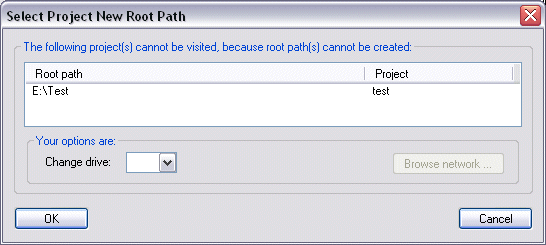

It may happen that the drive where project sources were stored is no longer accessible. It could have been a removable drive, network drive, or a hard drive that no longer exists. In that case you may use the menu item Project>Verify Root Paths to check root paths of all projects in one go. If the root drive(s) are not accessible, you will have the opportunity to change them.

The same dialog is displayed when Code Co-op database is restored from backup on a machine different from the original, and a particular drive (or drives) don't exist.
After the root drive(s) are modified, it is usually necessary to run Project Repair to restore all project files from the database.